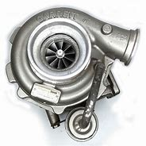

Turbo Compressor
Um turbo compressor é um componente fundamental em motores de combustão interna, projetado para aumentar significativamente a potência e eficiência do motor. Sua funcionalidade principal é aumentar a quantidade de ar que entra no motor, permitindo
queimar mais combustível e, consequentemente, gerar mais energia. A operação de um turbo compressor baseia-se no princípio da recuperação de energia dos gases de escape do motor. Quando o motor queima combustível, produz gases de escape a
alta temperatura e pressão. O turbo compressor aproveita essa energia dos gases de escape para girar uma turbina. A turbina está conectada a um eixo que, por sua vez, está conectado a um compressor localizado na entrada de ar do motor. O ar
atmosférico é aspirado pelo compressor, comprimido e enviado para os cilindros do motor a uma pressão mais elevada do que seria possível sem o turbo. Esse ar comprimido permite que mais combustível seja injetado nos cilindros, aumentando assim
a potência e o torque do motor. Além de aumentar a potência, o turbo compressor também pode melhorar a eficiência do motor, pois permite que motores menores produzam a mesma potência de um motor maior aspirado naturalmente. Isso resulta em
uma melhor relação potência-peso e, portanto, em um desempenho mais ágil e econômico.
Turbo compressor

Adicionar ao carrinho
Comprar